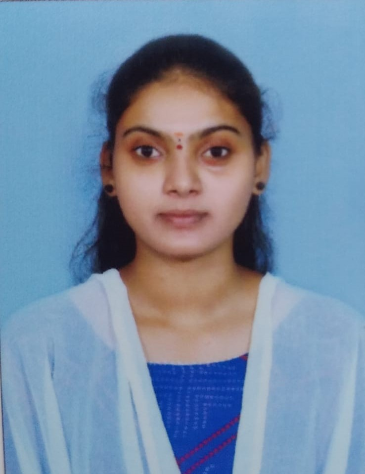

Baby Shamily Bandi

Summary
I am Baby Shamily Bandi, a Web Developer with a strong foundation in HTML, CSS, JavaScript, and ReactJS,
along with knowledge of manual testing concepts. I graduated in 2024 with a degree
in Electrical and Electronics Engineering and have a keen interest in building responsive and user-friendly
web applications.I am a quick learner with a problem-solving mindset, always eager to explore new technologies
and improve my skills.
Education
B-TECH
- Rajiv Gandhi University of Knowledge Technologies (RGUKT-Basara)
- Electrical and Electronics Engineering|June 2020 - May 2024|CGPA:8.63
PUC (INTERMEDIATE)
- Rajiv Gandhi University of Knowledge Technologies (RGUKT-Basara)
- Pre University Course|June 2018 - May 2020|CGPA:8.75
SSC
- ZP HIGH SCHOOL ,Kommugudem
- June 2017 - March 2018|CGPA:9.7
Work Experience
I am a fresher currently seeking my first opportunity in the field of web development.
While I haven’t worked in a company yet, I have gained practical knowledge by working on basic web development
projects. Through these projects, I have learned how to build responsive web pages using HTML, CSS, JavaScript,
and ReactJS and have improved my understanding of front-end development concepts.
Skills
- Communication
- leadership
- Time Management
Technical Skills
- Manual Testing Concepts-★ ★ ★ ★ ★
- HTML-★ ★ ★ ★ ★
- CSS-★ ★ ★ ★ ☆
- JavaScript-★ ★ ★ ☆ ☆
- React-★ ★ ★ ☆ ☆
Awards and Certifications
- Certified for participating in workshop on ANDROID AND IOS APP DEVELOPMENT
- Secured 9.7 GPA in SSC-2018 and got admission in RGUKT Basar
- Selected for NMMS Scholarship in 2016
MY HOBBIES
- Gardening
- Cooking
- Listening Music( listening to music for relaxation )
Contact Details